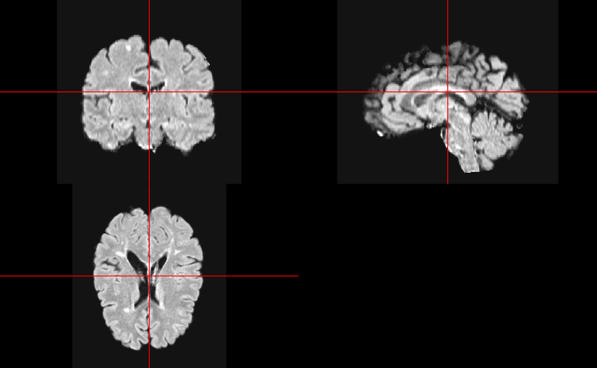
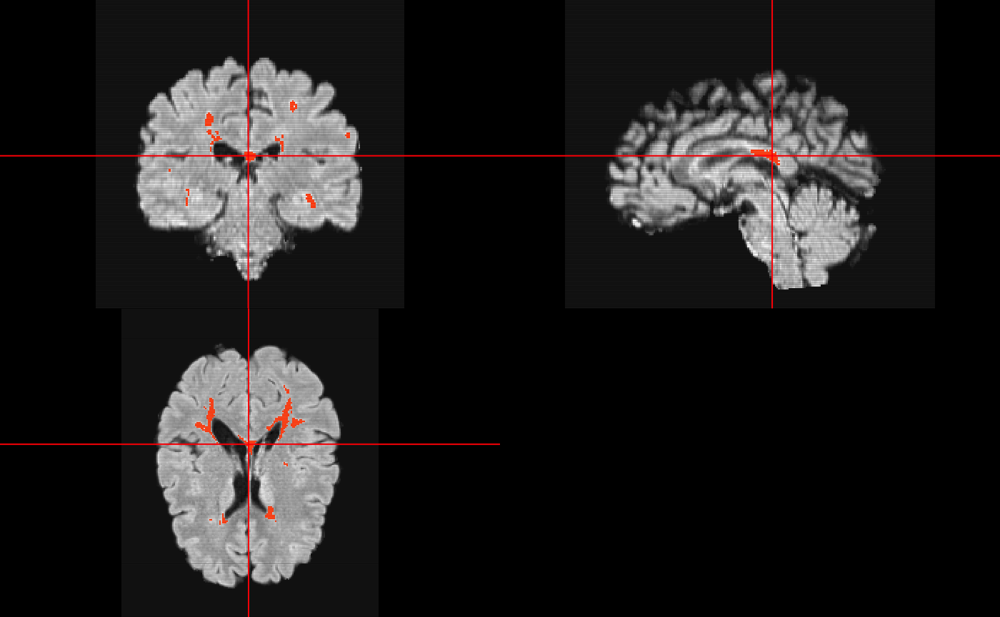

Installing FLEXCONN
FLEXCONN stands for Fast Lesion Extraction using Convolutional Neural Networks, which the main goal is to segment lesions from magnetic resonance images (MRIs) from patients with multiple sclerosis (MS). The methods are described here: https://arxiv.org/abs/1803.09172. Patients with MS commonly have 2 MRI sequences done, T1-weighted images and fluid attenuated inversion recovery (FLAIR). FLEXCONN requires a number of Python modules to run. You can install them either system wide (not shown) or using reticulate. The reticulate way is wrapped in install_flexconn:
flexconn::install_flexconn()Downloading a Model
Here we download one of the fit models from FLEXCONN 1.1 (https://www.nitrc.org/projects/flexconn/), which is from one reader, a 35x35 patch size (2D model) and it was fit using 21 atlases.
model_file = tempfile(fileext = ".h5")
base_url = paste0(
"https://github.com/muschellij2/flexconnr",
"/raw/master/inst/extdata/")
model_url = paste0(
base_url, "21atlases/",
"atlas_with_mask1/FLEXCONNmodel2D_35x35_17-10-2017_21-53-35.h5")
download.file(model_url, destfile = model_file)We will load the model into R so we can predict using it
model = keras::load_model_hdf5(model_file)
model
#> Model
#> Model: "model_1"
#> ________________________________________________________________________________
#> Layer (type) Output Shape Param # Connected to
#> ================================================================================
#> input_1 (InputLayer) [(None, None, Non 0
#> ________________________________________________________________________________
#> input_2 (InputLayer) [(None, None, Non 0
#> ________________________________________________________________________________
#> conv2d_1 (Conv2D) (None, None, None 1280 input_1[0][0]
#> ________________________________________________________________________________
#> conv2d_6 (Conv2D) (None, None, None 1280 input_2[0][0]
#> ________________________________________________________________________________
#> conv2d_2 (Conv2D) (None, None, None 204864 conv2d_1[0][0]
#> ________________________________________________________________________________
#> conv2d_7 (Conv2D) (None, None, None 204864 conv2d_6[0][0]
#> ________________________________________________________________________________
#> conv2d_3 (Conv2D) (None, None, None 18464 conv2d_2[0][0]
#> ________________________________________________________________________________
#> conv2d_8 (Conv2D) (None, None, None 18464 conv2d_7[0][0]
#> ________________________________________________________________________________
#> conv2d_4 (Conv2D) (None, None, None 12816 conv2d_3[0][0]
#> ________________________________________________________________________________
#> conv2d_9 (Conv2D) (None, None, None 12816 conv2d_8[0][0]
#> ________________________________________________________________________________
#> conv2d_5 (Conv2D) (None, None, None 1160 conv2d_4[0][0]
#> ________________________________________________________________________________
#> conv2d_10 (Conv2D) (None, None, None 1160 conv2d_9[0][0]
#> ________________________________________________________________________________
#> concatenate_1 (Concatenat (None, None, None 0 conv2d_5[0][0]
#> conv2d_10[0][0]
#> ________________________________________________________________________________
#> conv2d_11 (Conv2D) (None, None, None 18560 concatenate_1[0][0]
#> ________________________________________________________________________________
#> conv2d_12 (Conv2D) (None, None, None 204864 conv2d_11[0][0]
#> ________________________________________________________________________________
#> conv2d_13 (Conv2D) (None, None, None 18464 conv2d_12[0][0]
#> ________________________________________________________________________________
#> conv2d_14 (Conv2D) (None, None, None 12816 conv2d_13[0][0]
#> ________________________________________________________________________________
#> conv2d_15 (Conv2D) (None, None, None 1160 conv2d_14[0][0]
#> ________________________________________________________________________________
#> conv2d_16 (Conv2D) (None, None, None 73 conv2d_15[0][0]
#> ================================================================================
#> Total params: 733,105
#> Trainable params: 733,105
#> Non-trainable params: 0
#> ________________________________________________________________________________Downloading Data
Again, we need a T1-weighted and FLAIR image to do prediction. We use some example data here from the package and plot each one. The gt object is the ground truth, manual segmentation:
t1_file = system.file("extdata", "MPRAGE.nii.gz", package = "flexconn")
t1 = readnii(t1_file)
ortho2(robust_window(t1))
flair_file = system.file("extdata", "FLAIR.nii.gz", package = "flexconn")
flair = readnii(flair_file)
ortho2(robust_window(flair))
gt_file = system.file("extdata", "MPRAGE_manual.nii.gz", package = "flexconn")
gt = readnii(gt_file)
ortho2(robust_window(flair), gt, xyz = xyz(gt))
Predicting Lesions
Here we will predict using the pre-trained model and we
res = flexconn_predict(model,
t1 = t1_file,
flair = flair_file)
#> Normalizing Images
#> 99th quantile is 1136581.056, bandwidth =14207.263, gridsize =80
#> 4 peaks found.
#> Peak found at 1044512.47383877 for T1
#> 99th quantile is 34706.499, bandwidth =433.831, gridsize =80
#> 5 peaks found.
#> Peak found at 28277.7755924928 for FL
#> Predicting from model
#> ================================================================================Here we overlay the probabilities on the FLAIR image:
col.y = c("#010000", "#0C0000", "#170000", "#210000", "#2C0000",
"#360000", "#410000", "#4C0000", "#560000", "#610000",
"#6C0000", "#760000", "#810000", "#8B0000", "#960000",
"#A10000", "#AB0000", "#B60000", "#C10000", "#CB0000",
"#D60000", "#E00000", "#EB0000", "#F60000", "#FF0100",
"#FF0C00", "#FF1700", "#FF2100", "#FF2C00", "#FF3600",
"#FF4100", "#FF4C00", "#FF5600", "#FF6100", "#FF6C00",
"#FF7600", "#FF8100", "#FF8B00", "#FF9600", "#FFA100",
"#FFAB00", "#FFB600", "#FFC100", "#FFCB00", "#FFD600",
"#FFE000", "#FFEB00", "#FFF600", "#FFFF02", "#FFFF12",
"#FFFF22", "#FFFF32", "#FFFF42", "#FFFF52", "#FFFF62",
"#FFFF72", "#FFFF81", "#FFFF91", "#FFFFA1", "#FFFFB1",
"#FFFFC1", "#FFFFD1", "#FFFFE1", "#FFFFF1")
col.y = grDevices::col2rgb(col.y, alpha = 0.5)
col.y = grDevices::rgb(col.y[1,], col.y[2,], col.y[3,], col.y[4,], maxColorValue = 255)
ortho2(robust_window(flair), res, col.y = col.y)
Here we see we have a probability map of lesions. To get a binary mask, we can use the remove_small_components, which thresholds the image and removes voxels with fewer than 27 connected voxels:
pred = remove_small_components(res)ortho2(robust_window(flair), pred, xyz = xyz(pred), col.y = "#FF000080")
neurobase::fast_dice(pred, gt)
#> [1] 0.2118038